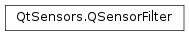

QSensorFilter¶
Inherited by: QPressureFilter, QDistanceFilter, QAccelerometerFilter, QProximityFilter, QAltimeterFilter, QLightFilter, QAmbientLightFilter, QHumidityFilter, QMagnetometerFilter, QIRProximityFilter, QOrientationFilter, QLidFilter, QTapFilter, QGyroscopeFilter, QTiltFilter, QRotationFilter, QHolsterFilter, QAmbientTemperatureFilter, QCompassFilter
Detailed Description¶
The
PySide2.QtSensors.QSensorFilterclass provides an efficient callback facility for asynchronous notifications of sensor changes.Some sensors (eg. the accelerometer) are often accessed very frequently. This may be slowed down by the use of signals and slots. The
PySide2.QtSensors.QSensorFilterinterface provides a more efficient way for the sensor to notify your class that the sensor has changed.Additionally, multiple filters can be added to a sensor. They are called in order and each filter has the option to modify the values in the reading or to suppress the reading altogether.
Note that the values in the class returned by
QSensor.reading()will not be updated until after the filters have been run.
-
class
PySide2.QtSensors.QSensorFilter¶
-
PySide2.QtSensors.QSensorFilter.m_sensor¶
-
PySide2.QtSensors.QSensorFilter.filter(reading)¶ Parameters: reading – PySide2.QtSensors.QSensorReadingReturn type: PySide2.QtCore.boolThis function is called when the sensor
readingchanges.The filter can modify the reading.
Returns true to allow the next filter to receive the value. If this is the last filter, returning true causes the signal to be emitted and the value is stored in the sensor.
Returns false to drop the reading.
-
PySide2.QtSensors.QSensorFilter.setSensor(sensor)¶ Parameters: sensor – PySide2.QtSensors.QSensor
© 2018 The Qt Company Ltd. Documentation contributions included herein are the copyrights of their respective owners. The documentation provided herein is licensed under the terms of the GNU Free Documentation License version 1.3 as published by the Free Software Foundation. Qt and respective logos are trademarks of The Qt Company Ltd. in Finland and/or other countries worldwide. All other trademarks are property of their respective owners.